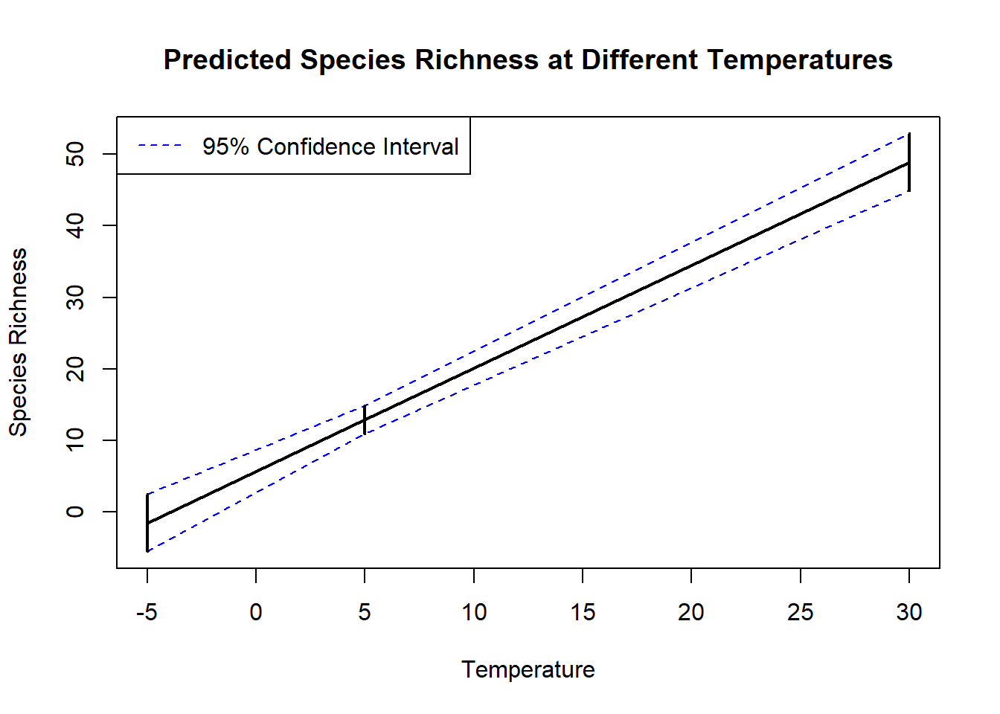

My github: https://github.com/DanielJSS/Biostat2_exam
Paper:
Maureaud Aurore, Hodapp Dorothee, van Denderen P. Daniël, Hillebrand Helmut, Gislason Henrik, Spaanheden Dencker Tim, Beukhof Esther and Lindegren Martin. 2019, Biodiversity–ecosystem functioning relationships in fish communities: biomass is related to evenness and the environment, not to species richnessProc. R. Soc. B.2862019118920191189 http://doi.org/10.1098/rspb.2019.1189
Data set doi:
Maureaud, Aurore et al. (2019), Data from: Biodiversity-ecosystem functioning relationships in fish communities: biomass is related to evenness and the environment, not to species richness, Dryad, Dataset, https://doi.org/10.5061/dryad.j76d7t2
When it comes to how well I was able to reproduce the part of the paper I was working on, I think I managed to make the plot look rather similar. The colors, axis increments, arrows, and dots looks similar. The data set had a “readME” file explaining what the variables mean, and In the paper itself, the figure text did explain well what was on the different axis making reproducing the plot not such a difficult task. What was difficult was getting a guide legend for the Dissimilarity as shown in the original paper. I added code for this, as I have done before on other projects, however nothing papers to show up on my plot and after many attempts and research I could not figure out why it does not show up. Furthermore, the original paper includes some pie charts with images of fish, and I believe these were added after the fact in a different program like inkscape. Looking through their code after the fact, the code does not include the guide that I struggled with getting, therefore this was added later and not in the code itself. Meaning that much of the figure was a combination of code and some drawing software making it hard to reproduce identically.
In the paper itself, they have a section on data availability, there they explain that all data in on “datadryad.org” and that an R code for all figures and Statistics is available in the electronic supplement material. This is a good thing for reproduce-ability The code itself was available, and the link did work. The code is written nicely, but with little expectation on what the lines of code does. Making this difficult to interpret exactly why the code was written the way that it was. a readME file was added in the github, providing some instructions on the data and code, making this easier for others to reproduce. The github repository has the data and a readme file, however no revn project, therefor it could be more transparent and reproducible. For the authors to use the best practice for reproducability, they could have added better comments to know what the code did and why, having good code documentation could have made this more reproducible and understandable. They could have added a revn project in their github to be more transparent to what packages and versions were used, making a more reproducible environment. While the data itself was available on both datadryad and github, I am not sure whether this is the RAW data or this has been cleaned by hand. It would be optimal if they added their raw data on places like Neotome, to be more transparent making sure they did not clean the data with a bias or with bad intent.
Running Code for part A
# Required packagesrequired_packages <-c("tidyverse", "readxl", "viridisLite", "scales", "ggplot2", "lme4", "datasets", "knitr")# Install required packages if not already installedfor (pkg in required_packages) {if (!require(pkg, character.only =TRUE)) {install.packages(pkg)library(pkg, character.only =TRUE) }}
Loading required package: tidyverse
── Attaching core tidyverse packages ──────────────────────── tidyverse 2.0.0 ──
✔ dplyr 1.1.2 ✔ readr 2.1.4
✔ forcats 1.0.0 ✔ stringr 1.5.0
✔ ggplot2 3.4.2 ✔ tibble 3.2.1
✔ lubridate 1.9.2 ✔ tidyr 1.3.0
✔ purrr 1.0.1
── Conflicts ────────────────────────────────────────── tidyverse_conflicts() ──
✖ dplyr::filter() masks stats::filter()
✖ dplyr::lag() masks stats::lag()
ℹ Use the conflicted package (<http://conflicted.r-lib.org/>) to force all conflicts to become errors
Loading required package: readxl
Loading required package: viridisLite
Loading required package: scales
Attaching package: 'scales'
The following object is masked from 'package:purrr':
discard
The following object is masked from 'package:readr':
col_factor
Loading required package: lme4
Loading required package: Matrix
Attaching package: 'Matrix'
The following objects are masked from 'package:tidyr':
expand, pack, unpack
Loading required package: knitr
# Load required packagesfor (package in required_packages) {library(package, character.only =TRUE)}
# Set the file path to get data file_path <-"Data/Dataset_S1.csv"# Read the CSV filedata <-read_delim(file_path, col_types =cols(.default ="character"), delim =",")####I want to create the Figure 3, with biomass and eveness, using dissimilarity. #Converting variables to numeric so that it works for the plot data$evesimpson <-as.numeric(data$evesimpson)data$jac <-as.numeric(data$jac)data$biomass <-as.numeric(data$biomass)
Warning: The `size` argument of `element_line()` is deprecated as of ggplot2 3.4.0.
ℹ Please use the `linewidth` argument instead.
# Display the plotprint(plot)
Part B
A colleague is testing the effect of a treatment on fish growth. They have ten tanks (five for each treatment). Each tank with ten fish. They plan to fit the model
Answer:
The main issue with this plan is that they only look at treatment as the predictor variable. As if treatment is the only thing that will in any way effect the outcome. If this was the only thing that was different between experiments, this could work. However, here the fish is also in different tanks. Meaning we cannot just ignore the effects of the tanks, at least not without testing for it first. Therefor, just assuming a linear model with only treatment as predictor is not a good plan, and ignores the effect tanks might have for the results outcome.
Simulate the data, and show the problem of this model
#Simulating the data to show the problem set.seed(123) # Setting seed for reproducibility# Simulating the datatreatment <-rep(c("A", "B"), each =50)tank <-rep(1:5, times =20)fish <-rep(1:10, times =10)growth <-rnorm(100, mean =ifelse(treatment =="A", 10, 12), sd =2)# Creating the data framefish_data <-data.frame(treatment, tank, fish, growth)# Fitting the initial modelinitial_model <-lm(growth ~ treatment, data = fish_data)# Displaying the model summarysummary(initial_model)
Call:
lm(formula = growth ~ treatment, data = fish_data)
Residuals:
Min 1Q Median 3Q Max
-4.911 -1.183 -0.116 1.315 4.269
Coefficients:
Estimate Std. Error t value Pr(>|t|)
(Intercept) 10.0688 0.2590 38.875 < 2e-16 ***
treatmentB 2.2240 0.3663 6.072 2.4e-08 ***
---
Signif. codes: 0 '***' 0.001 '**' 0.01 '*' 0.05 '.' 0.1 ' ' 1
Residual standard error: 1.831 on 98 degrees of freedom
Multiple R-squared: 0.2734, Adjusted R-squared: 0.2659
F-statistic: 36.87 on 1 and 98 DF, p-value: 2.403e-08
#Coefficients:
# Estimate Std. Error t value Pr(>|t|)
# (Intercept) 10.0688 0.2590 38.875 < 2e-16 ***
# treatmentB 2.2240 0.3663 6.072 2.4e-08 ***
As we can see on the output of the lm model, the model suggests that treatment does have a significant effect on growth compared to treatment A due to the less than 0.05 P value. However, since this data set is simulated, there is no actual difference between treatment A and treatment B. The model gives false indication of effect due to the fact that it fail to take in top account the effects of different tanks on the growth.
Suggest a better model and show that it performs better
A potential better model would be one that take in to account the effect of the tanks as a predictor. This would be a mixed effects model. By using a mixed effect model, also known as random-effects model, we can model the random effects tank will have on the growth, and give an understanding of within-tank variability.
library(lme4)#Creating a mixed effects model to include tank as a predicotr variable. mixed_model <-lmer(growth ~ treatment + (1| tank), data = fish_data)
boundary (singular) fit: see help('isSingular')
#Showing model sumamry summary(mixed_model)
Linear mixed model fit by REML ['lmerMod']
Formula: growth ~ treatment + (1 | tank)
Data: fish_data
REML criterion at convergence: 404.5
Scaled residuals:
Min 1Q Median 3Q Max
-2.68159 -0.64584 -0.06332 0.71793 2.33102
Random effects:
Groups Name Variance Std.Dev.
tank (Intercept) 0.000 0.000
Residual 3.354 1.831
Number of obs: 100, groups: tank, 5
Fixed effects:
Estimate Std. Error t value
(Intercept) 10.0688 0.2590 38.875
treatmentB 2.2240 0.3663 6.072
Correlation of Fixed Effects:
(Intr)
treatmentB -0.707
optimizer (nloptwrap) convergence code: 0 (OK)
boundary (singular) fit: see help('isSingular')
Mixed effect model output
The model did get an error code with “boundary (singular) fit: see help(‘isSingular’)”, menaing that there is a near perfect collinearity between the variables. Meaning it cannot give accurate description of the model.
I tried different mixed effects model like
mixed_model <- lmer(growth ~ treatment + (1 + treatment | tank), data = fish_data) but with the same result of this error code.
What advice do you give the authors?
My first advice would be to try and discuss the small effect size of their study rather than imminently trying to artificially enahnce their results. They do not interpret the practical significance of the effect size, trying to find an explanation and the implications of having such a small effect size is important to understanding the impacts of the treatment.
Interpreting the findings of artificially enhances sample size should be done with caution. I would recommend the authors to not be so brass as to state the significance of their findings without discussing the potential limitations and biases assisted with the method they used to acquire this artificial result. they need to discuss this and justify their use of this method and whether or not it can be trusted due to the artificial enhancement.
Even if the p value was significant the second time around , they do not discuss what this actually means in terms of practical significance. What does this mean for the real world, merely getting statistically significant result should not be the “end all be all” of data analyses. one needs to apply real world meaning to our findings and not just show a p value and expect it to tell a story on its own and be enough to show a valid result.
I would also recommend them to look in to other factors which can interfere with their results like study design, measurement instrument error, human error etc. that may have influenced the statistical analyses.
The lynx dataset. Plot the data then examine the acf and pacf for these data. What can you infer from these about the type of autocorrelation in these data?
#use the package datasets #load in the data from lynx and make a time series data("lynx")lynx_ts <-ts(lynx, start =1821, end =1934, frequency =1)
#Creating the plot ggplot() +geom_line(aes(x =time(lynx_ts), y = lynx_ts), color ="#1f78b4", linewidth =1) +theme_minimal() +labs(x ="Year", y ="Number of Lynx",title ="Number of Lynx Trapped in Canada (1821-1934)",plot.caption ="Data Source: Lynx Dataset") +theme(plot.title =element_text(size =16, face ="bold"),plot.caption =element_text(hjust =1, size =10),axis.text =element_text(size =12),axis.title =element_text(size =14),panel.grid.major =element_line(color ="#DDDDDD"),panel.grid.minor =element_blank())
Don't know how to automatically pick scale for object of type <ts>. Defaulting
to continuous.
Don't know how to automatically pick scale for object of type <ts>. Defaulting
to continuous.
Lynx TS plot
Now over to examine the acf and pacf:
# Calculate the ACF and PACFacf_result <-acf(lynx_ts, lag.max =30)
pacf_result <-pacf(lynx_ts, lag.max =30)
# Plot the ACFplot(acf_result, main ="ACF of Lynx Data")
# Plot the PACFplot(pacf_result, main ="PACF of Lynx Data")
ACF output
PACF output
When looking at ACF plots, we look for spikes above the blue line, if the plot has these lines about the blue dashed like it indicates auto correlations of the lags.
In this instance, the spikes seemsto be exponentially declining in the ACF plot, while in the PCAF plot contains spike in the first and more lags. Whit these criteria met, it seems as if this is an auto regressive process. And since the first spike of the ACF plot is significant, and after which an exponential decline occurs, we can infer that this is a first order auto regressive process. Given the amount of spikes above the dashed line in the ACF plot, there is a strong autocorrelation present in the data. this means that the current level of lynx population is dependent on the amount of lynx in the previous time step with some lagged effect.
Chironomid species richness
# Set the file pathfile_path <-"chironomid.txt"# Read the TXT filedata <-read.table(file_path, header =TRUE)# Convert it into a dataframedf <-as.data.frame(data)
The response variable here is species richness, given how this is count data (number of species). Models normally used for count data is Poisson distribution. The poisson distribution also assumes independence. Meaning here that the presence/absence of one species in the area does not affect the presence or absence of another. This can be true in ecological studies, usually since if there are multiple species cohabitation in an area they usually fill completely or at least slightly different ecological niches. If they had the same niche, they would compete and one would eventually win and outcompete the other to extinction.
What type of analysis is appropriate?
An appropriate analyses here could be multiple regression analyses, since we are testing the relationship between multiple predictor variables and a continuous response variable.
Fit the model
# Fit the multiple regression modelmodel <-lm(noSpecies ~ temperature + pH + depth, data = df)# Summary of the modelsummary(model)
Call:
lm(formula = noSpecies ~ temperature + pH + depth, data = df)
Residuals:
Min 1Q Median 3Q Max
-16.1757 -5.4403 0.0547 5.1252 17.5230
Coefficients:
Estimate Std. Error t value Pr(>|t|)
(Intercept) 13.82959 5.96676 2.318 0.0218 *
temperature 1.44286 0.11144 12.947 <2e-16 ***
pH -1.35275 0.81540 -1.659 0.0992 .
depth 0.05710 0.09188 0.621 0.5352
---
Signif. codes: 0 '***' 0.001 '**' 0.01 '*' 0.05 '.' 0.1 ' ' 1
Residual standard error: 6.638 on 153 degrees of freedom
Multiple R-squared: 0.5829, Adjusted R-squared: 0.5747
F-statistic: 71.28 on 3 and 153 DF, p-value: < 2.2e-16
Multiple regression model output
Here we can see that temperature is the only thing with a significant p value, which could be interpreted in a way that temperature if the only thing affecting species richness.
Check the model diagnostics. Justify any changes you need to make to the model
#Plotting the residuals vs. fitted valuesplot(model$fitted.values, model$residuals, xlab ="Fitted Values", ylab ="Residuals", main ="Residuals vs. Fitted Values")
# Checking normality of residuals using a QQ plotqqnorm(model$residuals)qqline(model$residuals)
# Heteroscedasticity - Residuals vs. Fitted Valuesplot(model$fitted.values, abs(model$residuals), xlab ="Fitted Values", ylab ="Absolute Residuals", main ="Residuals vs. Fitted Values")
residual vs. fitted values
Q-Q plot
Normal Q-Q plot w/line
Heteroscedasticity
There does not seem to be any pattern in the Heteroscedasticity, which is a good thing. Model checks out for this part.
The points in the Q-Q plot roughly follows a straight line, indicating normally distribution. The model checks out for normal distribution
The point does deviate a bit when looking at the plot with a line. Here it seems as if the plot has a “heavy tail”, meaning that the dots deviates from the line at both ends of the plot. Suggesting outliers in the residual distribution. There is some deviation, so I would not be 100% confident that there is normal distrubution here. But we can try to see if other model could work. If not, we can proceed with the model as is.
One thing we can try to do to fix the issue of heavy tails is to log transform the respons variable. And run the whole thing again
# Apply logarithmic transformation to the response variabledf$log_noSpecies <-log(df$noSpecies)# Fit the multiple regression model with the transformed response variablemodel <-lm(log_noSpecies ~ temperature + pH + depth, data = df)# Summary of the modelsummary(model)
Call:
lm(formula = log_noSpecies ~ temperature + pH + depth, data = df)
Residuals:
Min 1Q Median 3Q Max
-1.93787 -0.22235 0.09887 0.28159 0.82261
Coefficients:
Estimate Std. Error t value Pr(>|t|)
(Intercept) 2.796114 0.423460 6.603 6.26e-10 ***
temperature 0.085706 0.007909 10.837 < 2e-16 ***
pH -0.131839 0.057869 -2.278 0.0241 *
depth -0.001801 0.006521 -0.276 0.7828
---
Signif. codes: 0 '***' 0.001 '**' 0.01 '*' 0.05 '.' 0.1 ' ' 1
Residual standard error: 0.4711 on 153 degrees of freedom
Multiple R-squared: 0.5061, Adjusted R-squared: 0.4965
F-statistic: 52.27 on 3 and 153 DF, p-value: < 2.2e-16
# Residual analysis# Residuals vs. Fitted Valuesplot(model$fitted.values, model$residuals, xlab ="Fitted Values", ylab ="Residuals", main ="Residuals vs. Fitted Values")
# Normality of Residuals - QQ Plotqqnorm(model$residuals)qqline(model$residuals)
# Heteroscedasticity - Residuals vs. Fitted Valuesplot(model$fitted.values, abs(model$residuals), xlab ="Fitted Values", ylab ="Absolute Residuals", main ="Residuals vs. Fitted Values")
###Go back to the origianl model model <-lm(noSpecies ~ temperature + pH + depth, data = df)
The diagnostics of the model with the log transformed response variable looks alot worse in the diagnostics, and will therefor not be used further! I will continue to use the original model.
Predict species richness at -5, 5, and 30°C and show the 95% confidence intervals.
Answer:
# Temperature values for predictionnew_temperatures <-c(-5, 5, 30)# Create a new data frame for predictionnew_data <-data.frame(temperature = new_temperatures, pH =mean(df$pH), depth =mean(df$depth))# Predict species richnesspredictions <-predict(model, newdata = new_data, interval ="confidence", level =0.95)# Create a data frame with predictions and confidence intervalsresults <-data.frame(Temperature = new_temperatures, SpeciesRichness = predictions[, "fit"],LowerCI = predictions[, "lwr"],UpperCI = predictions[, "upr"])# Print the resultsprint(results)
# Plotting the resultsplot(results$Temperature, results$SpeciesRichness, type ="l", lwd =2,xlab ="Temperature", ylab ="Species Richness",ylim =c(min(results$LowerCI), max(results$UpperCI)), main ="Predicted Species Richness at Different Temperatures")# Adding confidence intervals as error barslines(results$Temperature, results$LowerCI, lty =2, col ="blue")lines(results$Temperature, results$UpperCI, lty =2, col ="blue")segments(results$Temperature, results$LowerCI, results$Temperature, results$UpperCI, lwd =2)# Adding legend for confidence intervalslegend("topleft", legend ="95% Confidence Interval", lty =2, col ="blue")

Speciess richness at differing temperatures
Now to make a table using the knitr package:
library(knitr)#Create a data frame with predictions and confidence intervalsresults_table <-data.frame(Temperature = new_temperatures,SpeciesRichness = predictions[, "fit"],LowerCI = predictions[, "lwr"],UpperCI = predictions[, "upr"])# Print the results table using 'kable'kable(results_table, caption ="Predicted Species Richness at Different Temperatures")
Predicted Species Richness at Different Temperatures
Temperature
SpeciesRichness
LowerCI
UpperCI
-5
-1.56499
-5.571909
2.44193
5
12.86364
10.895974
14.83130
30
48.93520
44.957238
52.91316
Table of speciess richness at differing temperatures
Write a biological interpretation of your model.
This model shows that the species richness is negative at negative temperature values. In reality, this makes no sense as there cannot be negative number of species. This could mean there is some limitations to the data or most likely the model itself.
At the positive temperature values, the species richness seems to increase, showing that higher temperatures can facilitate a larger number of species.


.png)


.png)